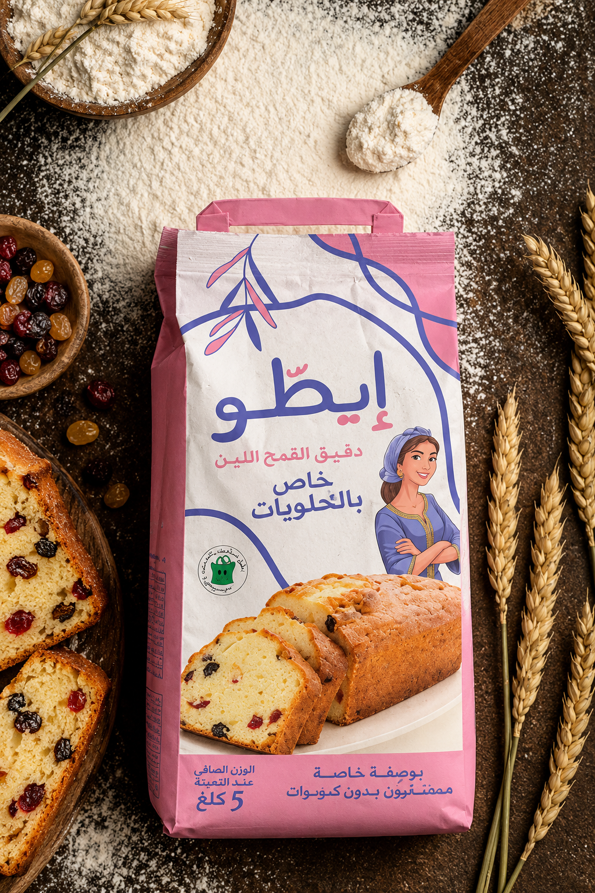

Notre Promesse :
L'Intégrité Absolue de Votre Identité.
L'Intégrité Absolue de Votre Identité.
Les Fondations Visuelles
L'Héritage
#7172C5
La Chaleur
#DC92A0
La Pureté
#FFFFFF
La Voix Écrite
Aa Bb Cc
Modern Moroccan Heritage
L'Âme
Authenticité
Tradition
Excellence
Qualité
Tradition
Excellence
Qualité
Chaque publication respectera rigoureusement les codes du Brand Book.
Le Pivot Stratégique :
De Mascotte à Influenceuse Virtuelle.
De Mascotte à Influenceuse Virtuelle.

Sachet Statique
→
1. L'Incarnation :
Elle n'est plus seulement une image sur un sachet. Elle devient l'animatrice de votre communauté.
2. L'Interactivité :
Elle cuisine, elle commente l'actualité, elle répond aux messages.
3. L'Attachement :
Création d'un lien parasocial fort avec l'audience marocaine.
L'Équilibre Éditorial :
La Recette d'un Feed Parfait.
La Recette d'un Feed Parfait.
Fierté Nationale
Marche Verte, Fêtes Religieuses
Agilité & Temps Réel
Humour, Matchdays ENDM
Proximité Culinaire
Recettes, Astuces de cuisine, Interaction
Vitrine Premium
Mise en avant des gammes Cake, Finot, Durum
Une présence sociale qui nourrit à la fois l'esprit et le panier d'achat.
← Tradition & Héritage
Modernité & Pop-Culture →
Pilier 1 : L'Âme Marocaine (Célébrer nos Traditions)
Focus Marche Verte
Itto comme figure de patriotisme doux et respectueux. « Une fierté qui se transmet de génération en génération. »
Focus Aïd Al-Adha
Itto au cœur du foyer, incarnant l'hospitalité et l'excellence culinaire. « Le goût du rassemblement. »
Pilier 2 : L'Agilité Pop-Culture (Le Sourire au Cœur de l'Actu)

Concept : Itto x Matchday
Insuffler de l'humour et du soutien lors des matchs de l'Équipe Nationale.
Objectif
Générer de la viralité, des partages (shares), et ancrer Itto dans les conversations quotidiennes de la jeunesse marocaine.
Pilier 3 : La Farine comme Œuvre d'Art (Focus Produit)
Post 1 : L'Art du Cake
Mise en avant de la farine de blé tendre spéciale pâtisserie. « Un moelleux inégalé sans grumeaux. »
Post 2 : L'Héritage du Pain
Hommage au Msemen et au Finot (Blé Dur). « Le craquant du four traditionnel. »
L'Esthétique Globale :
Le Feed 'Itto Ya Salam'.
Le Feed 'Itto Ya Salam'.
L'Harmonie Visuelle
L'alternance parfaite entre illustration 2D ('Cultural Charm'), photographie culinaire appétissante ('Artisanal Baking Comfort'), et respirations graphiques (Brand Book).
Résultat
Un profil Instagram qui ne ressemble pas à un catalogue industriel, mais à un véritable magazine d'art de vivre marocain.

La Voix d'Itto : Proche, Chaleureuse, et Experte.
Bonjour, quelle farine utiliser pour réussir un cake très moelleux ?
Bonjour Lalla ! Pour un cake d'un moelleux incomparable, notre farine de blé tendre spéciale pâtisserie (le sachet rose) est votre meilleure alliée. N'hésitez pas à tamiser la farine avant de l'incorporer. Bonne préparation ! ✨
Proximité :
Utilisation naturelle de termes affectueux ('Lalla', 'Khti') pour instaurer une relation de confiance immédiate.
Passion Culinaire :
Des réponses qui apportent toujours une valeur ajoutée ou une astuce de cuisine.
Gestion Qualité (SAV) :
Un protocole strict de modération, offrant des réponses rassurantes et expertes aux requêtes produit.
La Règle d'Or : Itto n'est jamais un 'robot corporatif' ; elle est l'amie experte en cuisine.
De la Cuisine à la Publication :
Notre Feuille de Route.
Notre Feuille de Route.
Mois 1
Étape 1 : La Préparation
« Le tamisage des idées. » Setup des outils sociaux, validation du calendrier éditorial détaillé, création des templates.
Mois 2
Étape 2 : Le Pétrissage
« La pâte prend vie. » Lancement des premiers piliers, activation de la mascotte Itto, community management proactif, premiers posts 'Matchday'.
Mois 3+
Étape 3 : La Dégustation
« L'analyse des saveurs. » Reporting mensuel des KPIs (Engagement, Portée), ajustement de l'équilibre éditorial, et optimisation.